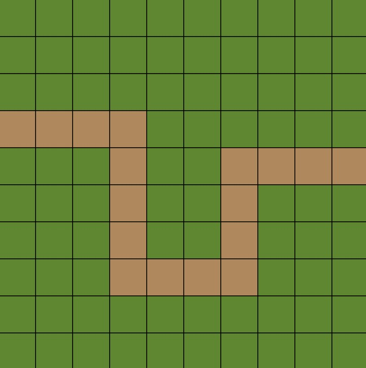
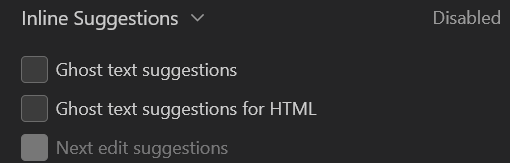
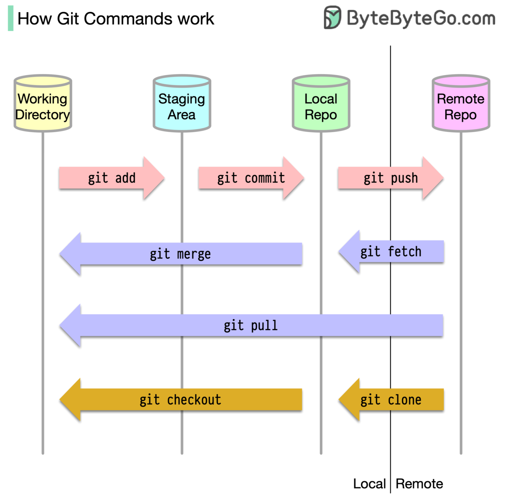

Andreas Hussain Sarantaris
Frederikssund Gymnasium · Programmering B
let arr = [];arr.push()for (let i = 0; i < arr.length; i++) {...}{}) i en funktion og kalde funktionen flere gange i en for-løkke.function createFlower() {
let flower = {
x: random(20,380),
y: random(20,380),
size: random(20,75),
lifespan: random(255,300),
color: color(
random(255),
random(255),
random(255))
};
return flower;
}grid
for (let i=0; i < grid.numElems; i++) {line(0, i*grid.sizeElems, width, i*grid.sizeElems)}
grid.data[i][j] === 1
logbog.13 med en ny markdown-fil README.md.
git status – se hvilke filer der er ændretgit add -A – stage alle ændringergit commit -m "Beskriv ændringen" – gem en version (snapshot)git push – send dine ændringer op til GitHubgit pull – hent ændringer fra GitHubgit log – se tidligere commits
git config --global user.name "Jeres Navn" hvor I indsætter jeres eget navn så man kan se hvilke commits I har lavet.git config --global user.email "jeres@email.dk" hvor I indsætter jeres personlige email-addresse.git init for at initialisere versionskontrol med git i mappen. .git-mappe der opdateres hver gang der køres en kommando med git så den indeholder alt information om versionerneREADME.md fil i mappen, og skriv Hello World i den. git add -A for at "stage" jeres ændringer.git commit -m "First commit: Add readme".git remote add origin https://github.com/brugernavn/sunrise-game.git hvor I indsætter jeres GitHub brugernavn i url-addressen.git push -u origin main for at pushe jeres lokale main-branch til origin/main på GitHub, og samtidig sætte origin/main som upstream-branch for jeres lokale main.Hello mom og commit.git pull.Hello mum and dad og kør git commit -m "edit: add 'dad' to hello message in readme" men kør IKKE git push.Hello mum og skriv Hello family i stedet og commit.git pull. Der burde ske en merge konflikt.| Punkt * | Start + varighed | Aktivitet | Indhold |
|---|---|---|---|
| 1U | 10:00 + 10 | Opsamling fra sidst | Kort opsummering og hovedbudskaberne af sidste lektion. |
| 1Ø | 10:10 + 10 | Gennemgang af lektier til i dag | Eventuelle spørgsmål om indholdet i sidste lektion, samt gennemgang af de projekter som I har fundet. |
| 2U | 10:20 + 20 | Læreplan til Programmering B - Del 2 | Supplerende stof, didaktiske pricnipper og logbøger. |
| 2Ø | 10:40 + 10 | Opstart af logbøger | I får lidt tid til at påbegynde jeres logbøger med et refleksionsresume af sidste forløb. |
| 3U | 10:50 + 10 | Introduktion til Git og GitHub | Kort introduktion til de vigtigste Git-kommandoer og hvordan Github fungerer som en fælles database. |
| 3Ø | 11:00 + 25 | Opstart af Git og GitHub | I skal downloade Git og oprette en bruger på Github. |
| 4U | 11:25 + 5 | Opsamling, lektier og næste lektion | Hjemmearbejde til næste gang og emnerne for næste lektion. |
| 4Ø | 11:30 + 5 | Afrunding | Færdiggør jeres arbejde og reflektér over jeres læring. |